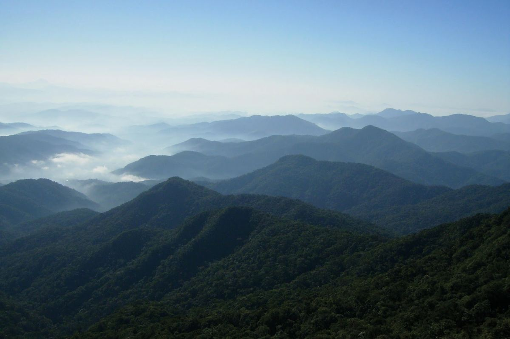
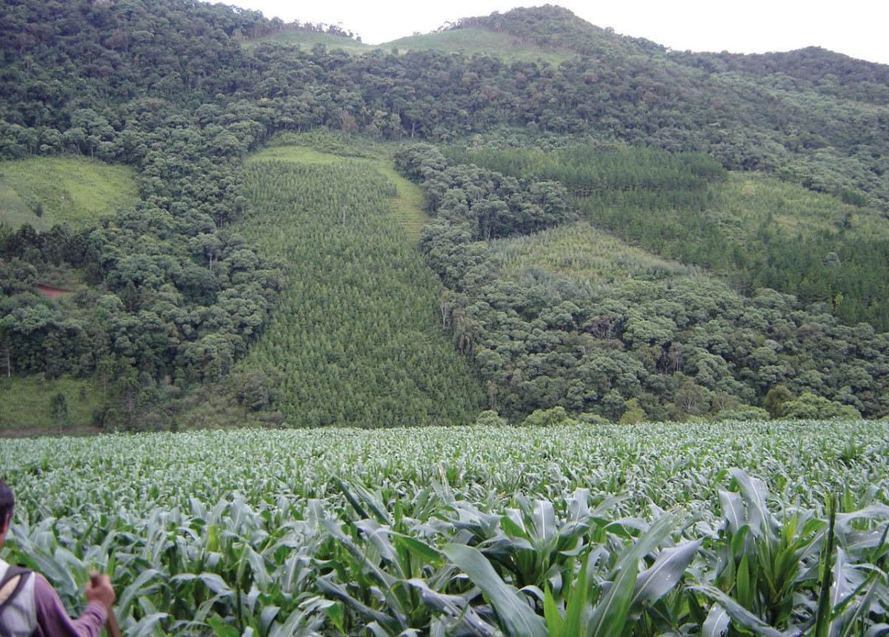
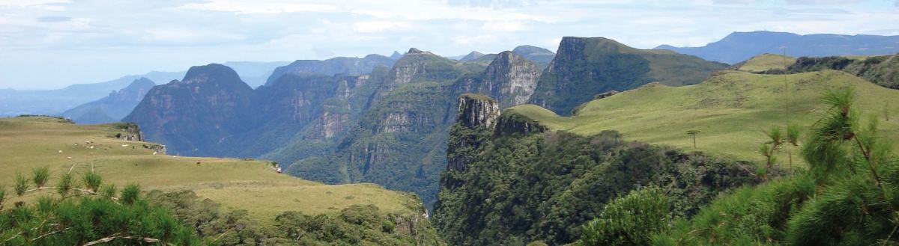

➤ Quanta floresta nativa ainda resta em Santa Catarina?
➤ Quais espécies de árvores e demais plantas existem nelas?
➤ Como está a sua região quanto à qualidade e quantidade das florestas?
➤ Quais são as espécies mais comuns e as mais ameaçadas?
➤ Quanto crescem as florestas por ano e quanta floresta ganhamos e perdemos?
➤ Quanto carbono está estocado nas florestas do estado?

Essas e outras perguntas são o foco do FlorestaSC...
O FlorestaSC (Inventário Florístico Florestal de Santa Catarina) coleta informações atualizadas, detalhadas e confiáveis sobre a quantidade e qualidade das florestas em Santa Catarina. O programa é executado a partir de três linhas de ação:
Levantamento e monitoramento da diversidade de espécies de árvores e dos estoques de biomassa das florestas de Santa Catarina Saiba mais →
Elaboração de mapas da cobertura florestal e outros usos da terra por meio de técnicas de geoprocessamento e sensoriamento remoto Saiba mais →
Iniciativas de divulgação científica e educação ambiental, focadas na valorização das florestas e direcionadas especialmente ao público escolar Saiba mais →
A criação do FlorestaSC vem da necessidade de gerar uma sólida base de dados para:
- Fundamentar a formulação de políticas públicas de uso e conservação das florestas do estado;
- Fornecer informações para o zoneamento econômico-ecológico para a atividade florestal no estado;
- Gerar novas informações para a atualização da lista das espécies vegetais ameaçadas de extinção;
- Subsidiar a identificação e definição de áreas prioritárias para a conservação e recuperação de ecossistemas degradados.
Dos estudos realizados pelo FlorestaSC – 1) Inventário dos Remanescentes Florestais; 2) Monitoramento da Cobertura Florestal, 3) Alometria, 4) Herbário, 5) Diversidade genética e 6) Levantamento Socioambiental – derivam os seguintes produtos:
1) Publicações técnicas e científicas contemplando composição de espécies, estrutura (diamétrica, horizontal e vertical) e dinâmica florestal com base nos dados coletados pelo inventário sistemático e contínuo das florestas (veja mais em publicações e produtos);
2) Mapeamento das florestas nativas catarinenses e de outros usos da terra por meio de Sensoriamento Remoto (veja aqui);
3) Modelos estatísticos para predição de volume de madeira e biomassa das florestas naturais catarinenses (veja aqui);
4) Disponibilização de coletas botânicas em herbário e plataformas online (veja aqui);
5) Diversidade e estrutura genética de populações de espécies ameaçadas pelo emprego de marcadores alozímicos (veja aqui);
6) Usos tradicionais dos recursos florestais e percepção da população rural por meio de entrevistas (veja aqui);

Desde 2007, o IFFSC aplica uma metodologia compatível com a do Inventário Florestal Nacional (IFN), embora modificada para atender demandas específicas do estado. A metodologia é baseada numa amostragem sistemática de múltiplas ocasiões, repetida a cada cinco anos, visando gerar informações e monitorar o estado de conservação dos recursos florestais, bem como mudanças no uso da terra ao longo do tempo. O IFFSC é um programa permanente do Governo do Estado.
As primeiras medições em campo (Ciclo 1) aconteceram entre os anos de 2007 a 2011, com o levantamento em campo de 597 parcelas distribuídas pelo Estado. A remedição das parcelas (Ciclo 2) iniciou em 2014 e será conduzida em 5 anos, com 20% das parcelas remedidas a cada ano.
Realizado pela Universidade Regional de Blumenau (FURB), em parceria com outras universidades do Estado – Universidade do Estado de Santa Catarina (UDESC) e Universidade Federal de Santa Catarina (UFSC) – e também com a Empresa de Pesquisa Agropecuária e Extensão Rural de Santa Catarina (Epagri).
Financiado pela Fundação de Amparo à Pesquisa e Inovação do Estado de Santa Catarina (FAPESC), pelo Governo do Estado e pelo Serviço Florestal Brasileiro (SFB).
As informações geradas pelo IFFSC são públicas e podem ser obtidas através das publicações, bancos de dados e sistemas.
Faça o download dos livros do IFFSC e outras publicações (cartilhas, artigos científicos, boletins, etc.).
Acesse aqui o Boletim 15 – Levantamento do segundo ciclo; Exposição Itinerante para ampliação da divulgação dos resultados ao público geral; e Projeto Monitoramento da Cobertura Florestal por Inventário Remoto.

FlorestaSC
florestasc@furb.br 47 3221-6100
Nossas ações
Levantamento e monitoramento da diversidade de espécies de árvores e dos estoques de biomassa das florestas de Santa Catarina Saiba mais →
Elaboração de mapas da cobertura florestal e outros usos da terra por meio de técnicas de geoprocessamento e sensoriamento remoto Saiba mais →
Iniciativas de divulgação científica e educação ambiental, focadas na valorização das florestas e direcionadas especialmente ao público escolar Saiba mais →
FlorestaSC
florestasc@furb.br 47 3221-6100
Metodologia (visão geral)
O FlorestaSC realiza diferentes estudos científicos. A metodologia de cada estudo pode ser acessada abaixo.


Biometria


Mapeamento / Sensoriamento Remoto


Histórico
Esta parte da página usa um recurso interativo do Google Sites que não pôde ser copiado. Ver no site atual ↗
FlorestaSC
florestasc@furb.br 47 3221-6100
Página migrada de floresta.sc.gov.br.